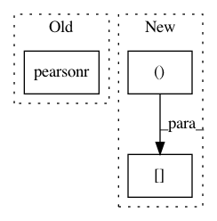

408f12dec2ff56559a26873a848a09e4c8facfeb,brainiak/isc.py,,isc,#Any#Any#Any#Any#,76
Before Change
for v in np.arange(data.shape[1]):
voxel_data = data[:, v, :].T
if n_subjects == 2:
iscs = pearsonr(voxel_data[0, :], voxel_data[1, :])[0]
elif pairwise:
iscs = squareform(np.corrcoef(voxel_data), checks=False)
elif not pairwise:
After Change
// Compute correlation for each corresponding voxel
iscs_stack = array_correlation(data[..., 0],
data[..., 1])[np.newaxis, :]
// Compute pairwise ISCs using voxel loop and corrcoef for speed
elif pairwise:
In pattern: SUPERPATTERN
Frequency: 3
Non-data size: 3
Instances
Project Name: brainiak/brainiak
Commit Name: 408f12dec2ff56559a26873a848a09e4c8facfeb
Time: 2019-04-19
Author: sam.nastase@gmail.com
File Name: brainiak/isc.py
Class Name:
Method Name: isc
Project Name: biolab/orange3
Commit Name: b5264000f20db429a3bd371ec66178c9fb49e5ce
Time: 2018-01-16
Author: ales.erjavec@fri.uni-lj.si
File Name: Orange/distance/distance.py
Class Name: PearsonModel
Method Name: compute_correlation
Project Name: NeuromorphicProcessorProject/snn_toolbox
Commit Name: 5f13d162d4efcdad9e6c0f740bbb6c0f92ed6f5e
Time: 2017-05-30
Author: bodo.rueckauer@gmail.com
File Name: snntoolbox/io_utils/plotting.py
Class Name:
Method Name: get_pearson_coefficients